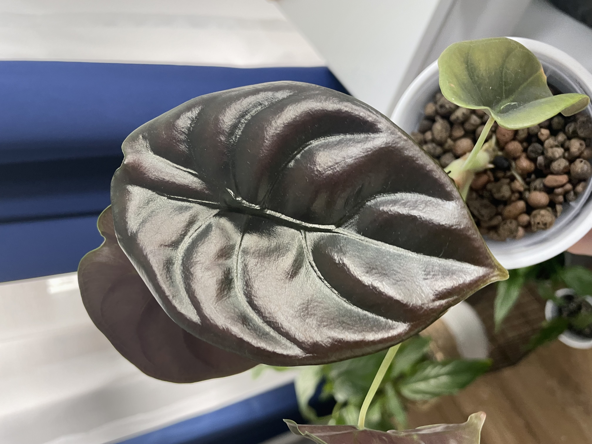
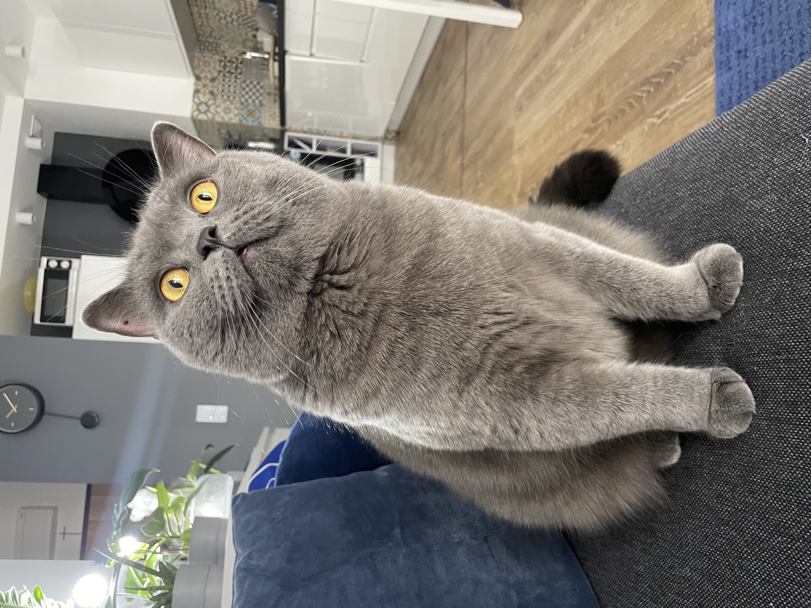

Trochę o mnie..
Pochodzę z gór, a to że aktualnie mieszkam w Warszawie, ma w sumie krótką historię :P
Przez 8 lat mieszkałam w Krakowie, gdzie studiowałam chemię na Uniwersytecie Jagiellońskim. Ciekawostką jest fakt, że na zajęciach z programowania byłam zielona jak moje roślinki (o tym trochę później). Chwilę pracowałam w zawodzie, a później założyłam swoją działalność, kompletnie niezwiązaną z chemią.
Piszę teksty SEO, prowadzę dwa kanały YouTube - jeden lifestylowy, a drugi związany z roślinami. Tak w skrócie przedstawia się moja działalność :)
Co robię w wolnej chwili?
Ważne pytanie - czy na własnej działalności można znaleźć czas dla siebie? TRZEBA!
-> moje mieszkanie jest dżunglą, w której mam ponad 60 roślin, chociaż wbrew pozorom ich pielęgnacja nie zajmuje mi dużo czasu
| ALOKAZJE | PHILODENDRONY | SPOSÓB UPRAWY |
|---|---|---|
| Cucullata | Micans | Klasyczny |
| Regal Shield | Narrow | |
| Black Valvet | Pink Princess | |
| Red Secret | White Princess | Hydroponiczny |
| Dragon Scale | Pedatum | |
| Zebrina | Silver Queen |
-> czytam trochę książek, głównie kryminały, psychologię i tematykę II wojny światowej
Lista książek niedawno przeczytanych oraz tych, które czekają w kolejce:
- Ostatnio przeczytane:
- Remigiusz Mróz - Kasacja
- Kontroler ruchu lotniczego
- Imi Lo - Moc Twojej wrażliwości
- Co niedługo będę czytać?
- Remigiusz Mróz - Zaginięcie
- Dawid Myśliwiec - Przepis na człowieka
-> w tym wszystkim czasami poprzeszkadza mi taka puszystka kulka, która jest ze mną już od 2 lat! Jeśli chcesz, możesz zajrzeć na jej Instagrama!
